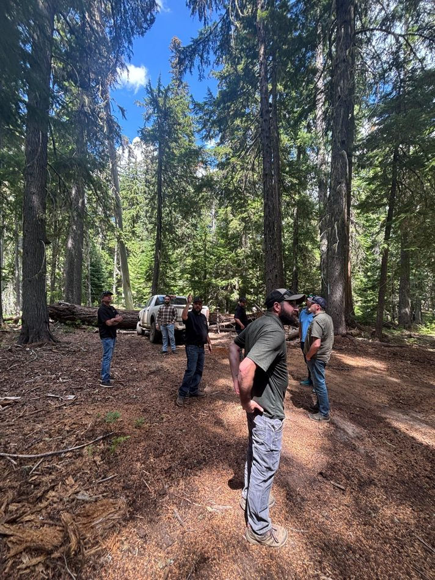

Project coordination
Organizing goals, partners, timelines, technical information, and next steps for complex conservation and natural resource projects.
Stewardship
I work across conservation, GIS, natural resources, Tribal engagement, field coordination, and public-facing communication to help stewardship work move from shared priorities to practical outcomes.

Connected landscapes
My work is grounded in the idea that conservation decisions rarely sit inside one resource area. Water quality, forests, working lands, infrastructure, public programs, and community priorities all shape durable stewardship outcomes.
I bring field experience, GIS, technical communication, and project coordination together to help partners understand the landscape, organize information, and move work forward.
Core strengths
Organizing goals, partners, timelines, technical information, and next steps for complex conservation and natural resource projects.
Using spatial tools, field knowledge, and clear communication to make conservation questions visible, practical, and actionable.
Supporting respectful, relationship-based engagement where technical work, community priorities, and stewardship decisions meet.
Field-informed work
Field experience helps keep conservation planning connected to actual conditions, implementation constraints, and the people responsible for long-term stewardship.
That field grounding matters whether the work involves forest inventory, water quality, restoration planning, GIS analysis, public communication, or partner coordination.

Stewardship settings
The images below support the story without carrying the text. Click any image to expand it.

